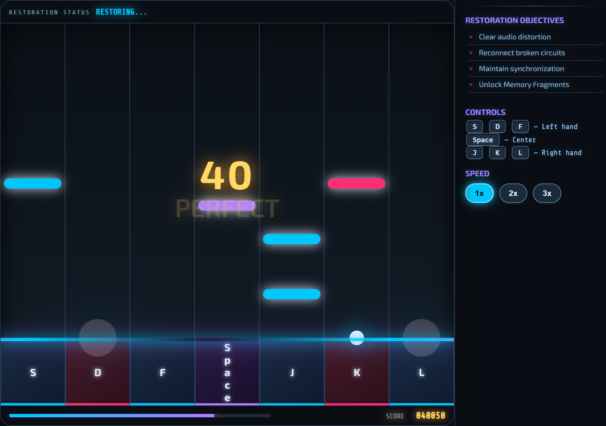

Forgotten Things
Making rhythm controls easier to read.
January–April 2026
Overview
- My role
- Designed the controls, timing feedback, scoring and note-speed options.
- What changed
- A friend struggled with using the mouse and keyboard together. I switched to keyboard-only tap notes, with one key for each of the seven lanes.
- What I observed
- When the same friend tried again, they could use the revised controls without a detailed explanation.
Desktop keyboard required for the playable prototype.
Reworking the controls

The revised controls
Seven tap-note lanes use S, D, F, Space, J, K and L.
The interface shows timing feedback and note-speed options.
AI assisted parts of the timing-judgment code.